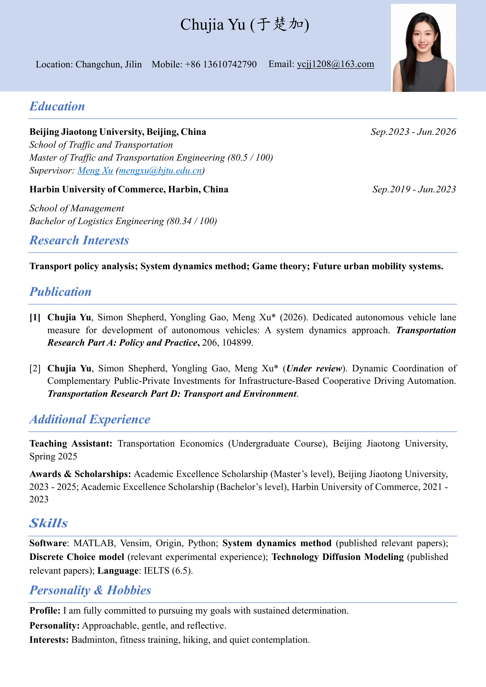

For selectable text or a higher resolution view, open the original PDF.
Curriculum Vitae
Transportation research · System dynamics · Future urban mobility

For selectable text or a higher resolution view, open the original PDF.